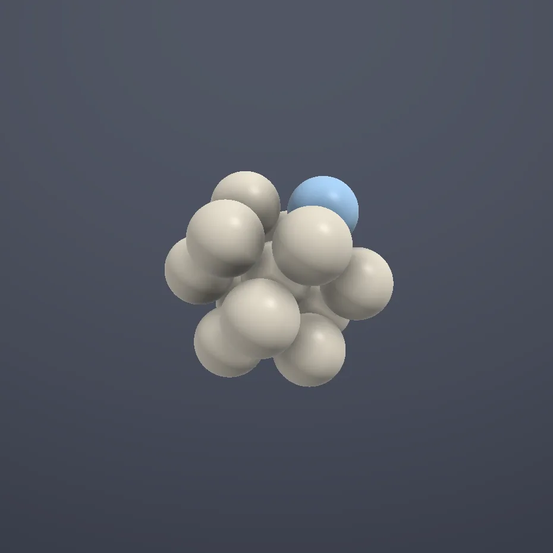
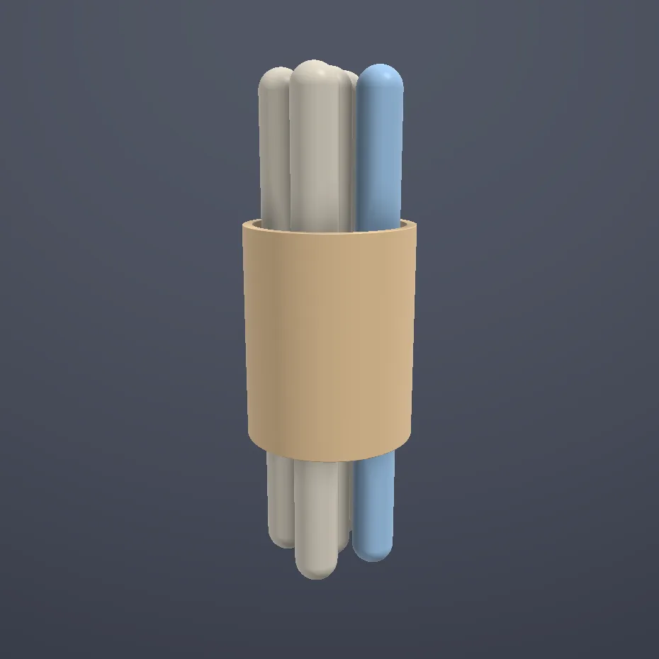
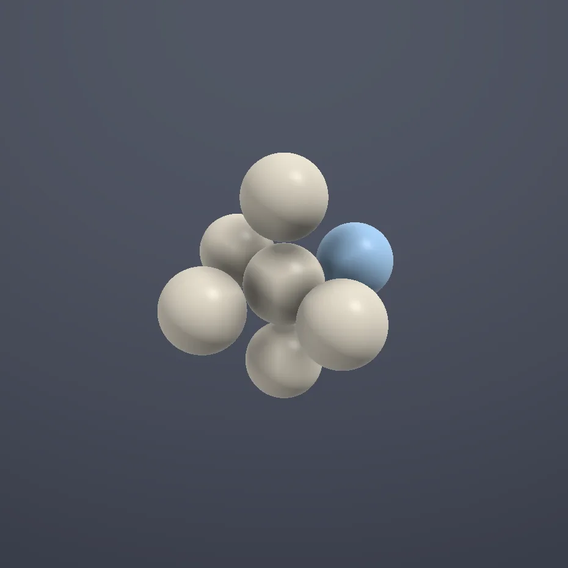
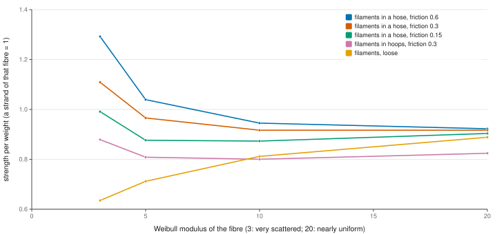

Rope after the knot: what holds in four dimensions
A knotted loop comes undone in four dimensions, and it is often taken to follow that a four-dimensional world could have no rope, no knots and no cloth. We argue that this overstates the loss. What four dimensions removes is narrow: one thread can no longer catch on another. Each thing a rope does in our world (holding twist, gripping its own fibres, braiding, being made fast) fails for thread against thread and returns when one of the two parts is a surface. We build each case as geometry in a solid-modelling kernel written for four dimensions, test twist in a frictionless bead-chain simulation run identically in three dimensions and in four, and compare ropes per weight in one tensile model. Three results. In the frictionless relaxation a twisted bundle of threads sheds every whole turn in four dimensions. Confined between a core and a sheath, the same bundle kept one turn and shed two in every run, consistent with the order-two full twist in the sphere braid group. And continuous filaments in a thin closed hose, the hose modelled as a material that can split and its tightness optimised, are worth 1.01 to 1.91 times the same filaments loose, per weight: most where the fibre is most scattered, almost nothing where it is uniform. The topology is known and cited. The mechanics and the comparison are the contribution.
1. Introduction
Two things in four dimensions can obstruct each other only if their dimensions add to at least three (general position; F1). Two threads add to two and pass through where each other would be. A thread and a surface add to three and catch. So a ring falls off a ring and stays on a sphere, and chains, cloth and bearings have been drawn and simulated on that basis (G1, G2, G3). The same sources state the consequence for textiles: what weaves and knots in four dimensions is a sheet or a tube, not a thread (G3, G6, G7).
Cordage in our world is thread against thread at every scale. Twist holds short fibres in a yarn because each is wound round the others and pressed on them by its own tension (B5, G4). A knot holds, and a braid stays braided, because a strand cannot pass through a strand. All of that goes in four dimensions, and the usual conclusion is that rope goes with it. We ask the engineering question instead: what is the least change that brings each function back, and what is the resulting rope worth? The answer in every case is one surface. The parts have different dimensions, and the argument depends on keeping them apart:
| name | shape | dimension | cross-section | what it can do |
|---|---|---|---|---|
| thread, filament | a curve | 1 | a ball | carry load; nothing else |
| ribbon | a strip | 2 | a strip | hold a thread wound on it, short of its edges |
| tube | circle × line | 2 | a ring | braid and knot (E1, E8) |
| hose | sphere × line | 3 | a sphere | enclose a bundle |
A tube and a hose are different objects, one dimension apart. Tubes braid and knot. A hose does neither: it is what a bundle goes inside.
 cross-section at w = 0
cross-section at w = 0
cross-section at w = 0.9
side view at z = 0 (w up) side view at z = 0.35
side view at z = 0.35 cross-section at w = 0
cross-section at w = 0
cross-section at w = 0.5 side view at z = 0 (w up)
side view at z = 0 (w up) side view at z = 0.3
side view at z = 0.32. Methods
Three instruments; the full account (supplement G, section 2) gives each in detail.
Geometry. CAD⁴ is a solid-modelling kernel for four dimensions, written for this work: a part is a tree of operations compiled to a distance function, and two parts interfere if a sampled grid finds a point inside both. We sweep one part along a named path, or push it once by several times its clearance, and record whether it then interferes. Either can show that a way out exists. Neither proves that none does, so where we say a link or a knot holds, that rests on a cited theorem.
Twist. Fibres are chains of 33 beads on springs with a repelling contact between fibres. Seven fibres (six round one) are laid as helices of a given number of turns, clamped at the ends, stretched 3%, jiggled and relaxed by damped dynamics. The same code runs with three coordinates or with four. Variants: a rigid ribbon for the core, and thirteen fibres (one and the twelve that fit round it) inside a wall that stands for a hose. There is no friction and no bending stiffness, so the instrument shows whether twist is held by geometry alone.
Tension. A rope is 96 sections of unit links, one track per fibre: a continuous filament, or short fibres laid end to end. Each link has its own strength, Weibull with modulus 5 unless varied (A2). Neighbouring tracks are joined by friction, elastic until the shear reaches 0.3 times the press between them and slipping after: the chain-of-bundles picture with frictional load transfer (A1–A7). The rope is stretched in 110 steps, each an equilibrium found by Newton's method on a convex energy, with links over their strength removed. Ropes differ in who touches whom and in the press. A hose is a fourteenth track that carries load and presses the fibres together as a thin pressure vessel would (D1), times 0.81, which is what a taut skin lying on the fibres presses with as a share of the vessel value (two independent calculations). Every stress is a fraction of a link's mean strength. Its skin is a material with flaws: each section has an axial and a hoop strength, and a section whose hoop strength is below the stress where the skin bends over a fibre (2.3 times the mean) splits and stops pressing. Tighter presses harder and splits more, so thickness and tightness are optimised on one set of seeds and the result reported on another. Strength and weight are in strands: one continuous strand's mean is 1, and every hose and hoop is weighed. The finite loading steps read a strand 2.6% low, and the last decimal of each strength carries that much.
3. Results
3.1 Twist
In three dimensions the turns stay and the fibres press on the core. In four every whole turn leaves through the spare direction, the pressure goes to zero and the energy returns to the untwisted value (4.7 against 4.7). With no jiggle the twist stands, so it is an equilibrium, and an unstable one. This is the loss of geometric trapping in a frictionless relaxation; a yarn with friction or bending stiffness might hold an unstable twisted state, and we have not tested one. A ribbon core holds the twist once it is wide enough that a fibre cannot slip round its edge: the threshold lies between half-widths of 0.1 and 0.2, one to two fibre radii.
 (a) Seven free fibres: turns kept at rest against turns given
(a) Seven free fibres: turns kept at rest against turns given (b) Thirteen fibres between a core and a wall: rest energy against whole turns given
(b) Thirteen fibres between a core and a wall: rest energy against whole turns givenThirteen fibres between a core and a wall keep one turn and shed two. Given whole numbers of turns, 3 seeds each, every even twist came to rest at the untwisted energy (19.3) and every odd twist at 45.4; with the wall loose, so that nothing is squeezed, the same (8.8 and 33.9 to 34.5). With no wall the thirteen shed everything. Known mathematics gives the same count. If the twelve outer fibres are treated as points on a sphere in each cross-section, their paths along the rope are a braid on a sphere, and in the sphere's braid group the full twist has order two (H3). Equivalently, a framed curve in four dimensions has two framings and not a whole number of them (H1, H2, F6): the belt trick. That is a statement about topological classes; what we measured is which rest energy each run reached. Establishing the reduction for the finite-thickness, soft-contact model, with its moving core and soft wall, remains open. We did not find the consequence for a twisted bundle stated anywhere. The evidence is rest energies for one shell of twelve; larger bundles are untested. So a hose does not give a four-dimensional rope twist to grip with: at most one turn in its whole length.
3.2 Fastening and braiding
A thread cannot be knotted (F1, F2): in the kernel a strand of a trefoil lifted into the spare direction passes the place where the other strand is, and meets nothing. A tube can. The same trefoil revolved is the spun torus of the knot, whose complement has the trefoil's group (E5, E8), and there the strand is stopped. Tubes braid as well: revolve any braid drawn in a half-space and every crossing is one tube passing through another, which is the loop braid group (E1, E6). One tube of a three-tube plait, swept along any of the four axes, runs into the other two; six tubes braided round a seventh are held the same way as far as pushes show. Flat ribbons do not braid: a ribbon has edges, and one slides out along its own width. Cloth is threads woven with ribbons, or sheets with sheets, which is published (G3, G6).
 cross-section at w = 0
cross-section at w = 0 cross-section at w = 0.5
cross-section at w = 0.5 side view at z = 0 (w up)
side view at z = 0 (w up) side view at z = 0.7
side view at z = 0.7For making fast, a bundle of rods inside a sphere cannot leave it sideways, where the same rods fall out of a ring (figure 1). A sphere round a post is the counterpart of a ring on a rod, and the geometric core of a hitch; we did not model a line attached to it or what stops it sliding. Two spheres and a ring make a Borromean link (F3): in the kernel the ring is stopped along every axis, and slides clear with either sphere taken away.
3.3 Strength per weight
Thirteen filaments, loose, in hoops, and in a hose, across the fibre's scatter and three values of friction. Each scatter has its own reference strand, which is 1.

| Weibull modulus (a strand's spread) | loose | hoops, μ 0.3 | hose, μ 0.15 | hose, μ 0.3 | hose, μ 0.6 | hose ÷ loose, μ 0.3 |
|---|---|---|---|---|---|---|
| 3 (38%) | 0.64 | 0.83 | 0.93 | 1.07 | 1.22 | 1.68 |
| 5 (23%) | 0.71 | 0.78 | 0.87 | 0.93 | 1.01 | 1.31 |
| 10 (12%) | 0.81 | 0.79 | 0.87 | 0.90 | 0.93 | 1.11 |
| 20 (6%) | 0.89 | 0.82 | 0.90 | 0.92 | 0.93 | 1.03 |
The hose rope is worth more than the loose bundle in every cell, by 1.01 to 1.91 times. The factor is set by the fibre's scatter: a skin lets a broken filament carry load again a little way along, which is worth a great deal when filaments have weak spots and almost nothing when they do not. Against a single strand the hose rope runs from 0.87 to 1.22, above 1 in 3 of the 12 cells, and that comparison also moves with the rope's length. What the rope buys first is reliability: at modulus 5 and μ 0.3 its 5th percentile is 0.85 per weight against a strand's 0.56. Hoops grip and carry nothing, and are below the loose bundle in 5 of the 12 cells. The optimiser chooses a hoop stress of 0.3 of the skin's strength at modulus 5; at the half we had first assumed, 97% of the skin would split.
A larger bundle is not stronger per weight but is more consistent: 55 fibres in a hose have a spread of 4% against 7% for thirteen, and are worth 1.12 times their loose bundle against 1.18. The like-for-like rope in three dimensions, a hexagonal bundle of 7 to 61 in a load-bearing tube, gains 1.10 to 1.12. So the four-dimensional hose gains more at thirteen fibres and no more at 55, and the model shows no clear advantage of twelve neighbours over six. Braids of strands, cabling, yarn on a ribbon and a hose that tightens as it stretches were pulled only in an earlier, simpler hose model and are in the full account for their order, not their values.
4. Sensitivity and limits
Re-optimised under each change to the skin's assumptions in turn, at modulus 5 and μ 0.3, the hose rope reads 0.93 ± 0.01 at baseline and from 0.81 to 1.03 across the versions, against 0.71 loose: above the loose bundle under every one, and above or below a strand depending on the version. Two assumptions matter most. How far a split runs is not determined by anything here, and if it runs the whole rope the hose loses most of its advantage (0.81). How evenly the skin is stressed is the other (1.02 with no peak). A candidate thickness and tightness with any unconverged pull was excluded from the tuning (14 of 366 were). All 2 280 pulls behind the reported rows were re-pulled, reproduced and converged; a review reimplemented the solver with a different minimiser and agreed to eleven figures.
Not modelled: damage that grows under load, bending, fibre migration, creep, and any mechanical difference between a tube and a thread. The braid laws are carried over from threads. The tube yarn, the tube knot and the sphere round a post are geometry and cited theorems, and none has been through a mechanical rig. The open items are listed at the end of the full account.
5. Discussion
The lesson is not that four dimensions is hospitable to rope. It is that the textbook fact was the wrong size. "A knot unties" is a statement about one curve. A rope is a made thing with parts of several shapes, and only the parts that are curves lose their hold on one another. Give the bundle a skin and the model says it is a rope. Make the strand a tube and geometry says it can be braided and knotted.
The twist result is the one we would single out. In our world a clamped bundle keeps any number of turns; in these simulations a four-dimensional bundle confined in a shell kept one, and a bundle not confined kept none. The count agrees with the one a sphere-braid reduction of the cross-section gives, and the simulation was not told it.
The strength comparison is a model's, and its absolute numbers move with choices we could not fix. It supports a mechanism (a skin lets a broken filament carry load again), a consequence (the gain is as large as the fibre is scattered) and an order (a hose above the loose bundle), not a figure. It does not support "a rope beats a strand" as a general statement, in four dimensions or, we suspect, in three.
The topology is not ours: the dimension rule, chains, sheet weaving, tubes as textile threads, the loop braid group, the spun torus, the Borromean link and the two framings of a curve are published and cited. Ours, as far as two prior-art passes could tell: the three-against-four twist experiment and its ribbon variant, the observation that a confined bundle keeps exactly one turn, the kernel constructions, the comparison of ropes on one bench with its weight accounting and sensitivity, and the reframing.
Contributions, data and code
Computation, code, analysis and drafting: Claude (Anthropic), in sessions directed by the PI. Independent audit: Astra, an auditor instance directed by the PI, which read the paper and code at a pinned commit and reported eight findings; before it, a second Claude instance read the repository cold. Both changed the paper (supplement F). Direction, judgement and the reframing: minor mobius. No human has audited the work. Everything is in minormobius/agent01 under kata/; every computed number in this text is filled from the data files by the build, and a test fails if the two part. The instruments run in a browser at kata.mino.mobi/cad4, /twist and /pull.
References
In each reference's tag: how far the citation, and then the claim relied on, was checked. The full list, with what each source is used for, is supplement C.
Supplement
- A. Rope drawings, twelve ropes, every panel live on a click: figures.html. B. Methods and results by chart: results.html. C. References with verification status: REFERENCES.md. D. Prior art: PRIOR-ART.md. E. The design space and corrections: CONFIGURATIONS.md. F. The reviews: REVIEW.md. G. The full account, with every method, table, check and open item: full.html.